闭合电路欧姆定律
图中小灯泡的规格都相同，两个电路中的电池也相同。多个并联的小灯泡的亮度明显比单独一个小灯泡暗。如何解释这一现象呢？
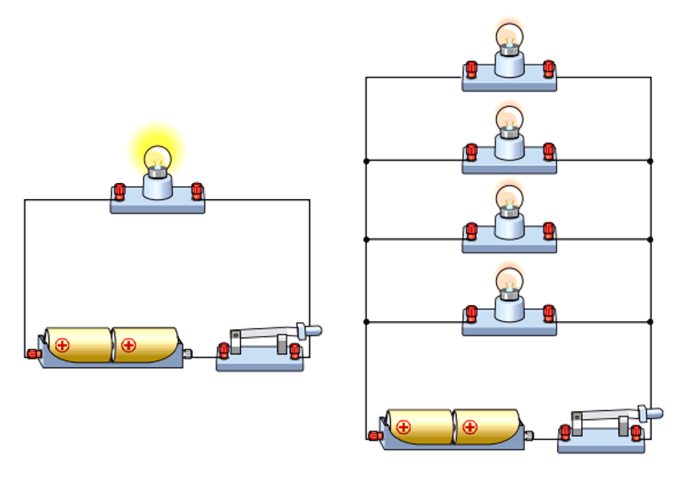
电源和电动势
电源
问题 1 回顾电源的作用是什么？
问题 2 电源为什么能够把正电荷从电源内部的负极移向正极？靠静电力？
问题 3 从能量转化角度来看，非静电力在搬运电荷时，对电荷做什么功？把其他能转化为什么能？
小结 电源是通过非静电力做正功把其他形式的能转化为电势能的装置。
电动势
- 物理意义：衡量电源把其他形式的能量转化为电势能的本领
- 定义：电动势在数值上等于非静电力把 1\;C 的正电荷在电源内从负极移送到正极所做的功
- 公式：E=\frac{W}{q}
公式 E=\frac{W}{q} 是比值定义式，即电源的电动势与非静电力做功、电荷量无本质的决定关系。电动势由非静电力的特性决定，跟电源的体积、外电路无关。
- 单位：伏特 (V)
- 标矢性：标量
例题
一台发电机用 0.5\;A 的电流向外输电，在 1\;\mathrm{min} 内将 180\;J 的机械能转化为电能，则发电机的电动势为
A. 6\;V B. 360\;V C. 120\;V D. 12\;V
判断
- 在某电路中每通过 20\;C 的电荷量，电池提供的电能是 30\;J，那么这个电池的电动势是 1.5\;V
- 电动势公式 E=\frac{W}{q} 中的“W”和电压公式 U=\frac{W}{q} 中的“W”是一样的，都是静电力做的功
- 在电源内，电源把其他形式的能转化为电能越多，则电源电动势一定越大
- 电源的电动势跟电源内非静电力做的功成正比，跟通过电源的电荷量成反比
理解内、外电路的电势升降
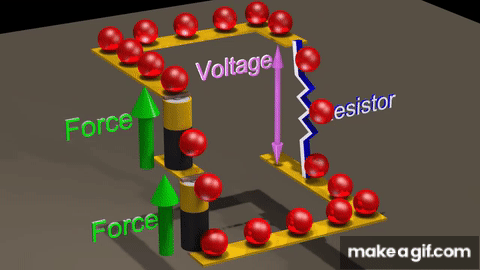
电路：家庭
正电荷的高度(电势): 钱
电源：挣钱的人
经过电源抬升的高度(电动势): 挣的钱
外电路：花钱的成员
经过外电路下降的高度 (电势差): 花的钱
小结
内阻为 r 的电源可以等效成一个理想电源和一个阻值为 r 的电阻串联
电动势和电源两极间的电压在数值上相等吗？
- 内阻：电源内部导体的电阻
- 内阻分压（内电压）：电流流过电源的内阻时所产生的电压降
- 内电路：内电路指电源内部的电流路径，包括电源的化学或物理过程，内阻等。
- 外电路：外电路是指连接在电源两端的电路部分，包括负载电阻、导线和其他电气元件。
- 路端电压（端电压）：路端电压是电源在外电路连接时，其两端的电压。
闭合电路欧姆定律及能量分析
电路中的电流
- 部分电路的电流
- 闭合回路的电流
- 在外电路中，电流方向由正极流向负极
- 在内电路中，通过非静电力做功使正电荷由负极移到正极，所以电流方向由负极流向正极。
电路中的电势变化
- 在外电路中，沿电流方向电势降低。
- 在内电路中，一方面，存在内阻，沿电流方向电势也降低；另一方面，由于非静电力做功，沿电流方向存在电势“跃升”。
思考与讨论
- 回顾部分电路欧姆定律的内容是什么？
- 闭合电路中的电流 I 与哪些因素有关呢？
- 设电源电动势为 E，内阻为 r，外电路电阻为 R，闭合电路的电流为 I
- 写出在 t 时间内，外电路中消耗的电能 Q_外的表达式？
- 写出在 t 时间内，内电路中消耗的电能 Q_内的表达式？
- 写出在 t 时间内，电源中非静电力做的功 W 的表达式？
- 根据能量守恒定律，它们之间有什么关系？
闭合电路欧姆定律
- 内容：闭合电路中的电流跟电源的电动势成正比，跟内、外电路的电阻之和成反比，叫做闭合电路欧姆定律。
- 公式：I=\frac{E}{R+r}
- 适用条件：外电路是纯电阻的电路
- U_{外}=IR 是外电路上总的电势降落，习惯上叫路端电压
- U_{内}=Ir 是内电路上的电势降落，习惯上叫内电压
练习
如图所示的电路中，电源电动势大小为 E=6\;\mathrm{V}，内阻为 r=1\;\Omega，纯电阻的大小分别为 R_{1}=6\;\Omega R_{2}=3\;\Omega，则当开关 S 闭合后，求流经电源的电流 I 及路端电压 U 的大小。
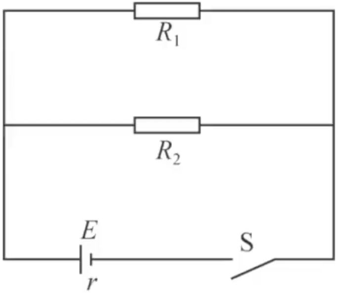
练习
如图所示的电路中，当开关 S 接 a 点时，标有“5\;V,\,2.5\;W”的小灯泡 L 正常发光，当开关 S 接 b 点时，通过电阻 R 的电流为 1\;A，这时电阻 R 两端的电压为 4\;V。求 R，r，E。
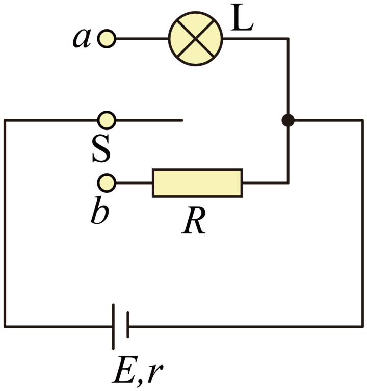
R=\frac{U_{b}}{I_{b}}=4\;\Omega R_{L}=\frac{U_{a}^{2}}{P_{L}}=10\;\Omega
I_{a}=\frac{P_{L}}{U_{a}}=0.5\;\mathrm{A}
\begin{cases} I_{a} = \frac{E}{r+R_{L}} \\ I_{b} = \frac{E}{r+R} \end{cases} \Rightarrow \begin{cases} r=2\;\Omega \\ E=6\;\mathrm{V} \end{cases}
路端电压与负载的关系
路端电压与外电路电阻的关系
U = E\cdot \frac{R}{R+r}
- 当外电路断开时，R \rightarrow \infty,\,U\rightarrow E
- 当外电路短路时，I=\frac{E}{r} 很大，一般情况下不允许外电路短路。
练习
一太阳能电池板，测得它的开路（断路）电压为 0.8V，短路电流为 0.04A。若将该电池板与一阻值为 20\Omega 的电阻连成一闭合电路，求它的路端电压？
r=\frac{E}{I_{短}}=20\;\Omega
U=E \cdot \frac{R}{R+r}=0.4\;\mathrm{V}
路端电压随电流变化的 U-I 图像
- 已知 E,\;r，表示出路端电压 U 与电流 I 的关系？
- 试作出电源的 U-I 图像；
- 分析图线与 x，y 轴交点的意义。
例题
题图是某电源的路端电压与电流的关系图像，分别求： 1. 电源的电动势 E 2. 电源的内阻为 r 3. 电源的短路电流为 I_{短} 4. 电流为 0.3A 时外电阻 R
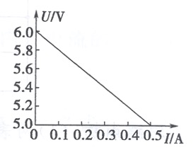
- E=6\;\mathrm{V}
- r=\frac{\Delta U}{\Delta I}=2\;\Omega (注意图中纵坐标起点不为零)
- I_{短}=\frac{E}{r}=3\;\mathrm{A}
- R=\frac{5.4}{0.3}=18\;\Omega
电源的三个功率及关系
三个功率
- 电源的总功率：P_{总}=IE
- 内耗功率：P_{内}=I^{2}r
- 输出功率：P_{出}=P-P_{内}=IE-I^{2}r=IU=I^{2}R
输出功率随外电阻变化的关系
当外电阻为纯电阻电路时，
P_{出}=I^{2}R=\frac{E^{2}}{(R+r)^{2}}\cdot R=\frac{E^{2}}{R+\frac{r^{2}}{R}+2r}
什么时候 P_{出} 最大，最大值是多少？
当且仅当 R=r 取得最大，最大值为 \frac{E^{2}}{4r}。
例 1
如图所示，R_{1}为定值电阻，R_{2}为可变电阻，E为电源电动势，r为电源的内电阻。下列说法正确的是
A. 当 R_{2}=R_{1}+r 时，R_{2} 上获得最大功率
B. 当 R_{1}=R_{2}+r 时，R_{1} 上获得最大功率
C. 当 R_{2}=0 时，电源的输出功率一定最大
D. 当 R_{2}=r 时，R_{1} 上获得的功率一定最大
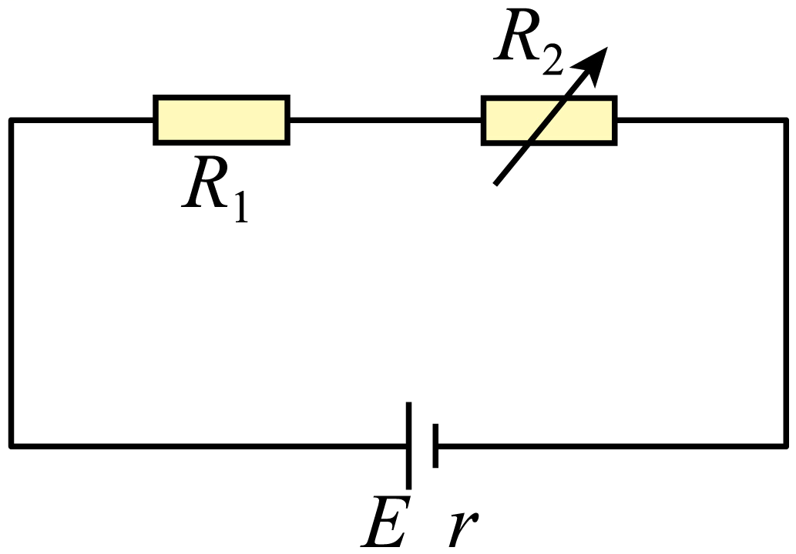
例 2
如图所示，将电源和定值电阻 R_0 等效为一个新电源，则利用“电阻 R 等于等效电源的内阻时，电阻 R 消耗的功率最大”这一结论可求解。电源的电动势 E=2V ，内阻 r=1\Omega，定值电阻 R_0=2\Omega，可变电阻 R 的阻值调节范围为 0\sim10\Omega。可变电阻 R 为多大时，R 上消耗的功率最大？最大值为多少？
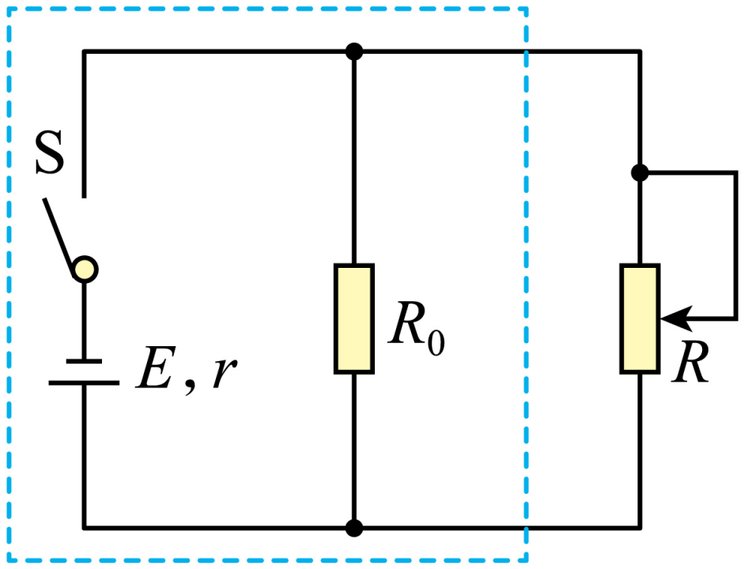
练习
如图甲所示电路中，R_{1} 是滑动变阻器，R_{2} 是定值电阻。实验时从最左端向最右端拨动滑片调节 R_{1} 的阻值，得到各组理想电压表和理想电流表的数据，用这些数据在坐标纸上描点、拟合，作出的 U-I 图像如图乙所示。求：
- 滑动变阻器的阻值为多大时，电阻 R_{2} 消耗的功率最大；
- 滑动变阻器的阻值为多大时，滑动变阻器 R_{1} 消耗的功率最大；
- 滑动变阻器的阻值为多大时，电源的输出功率最大。
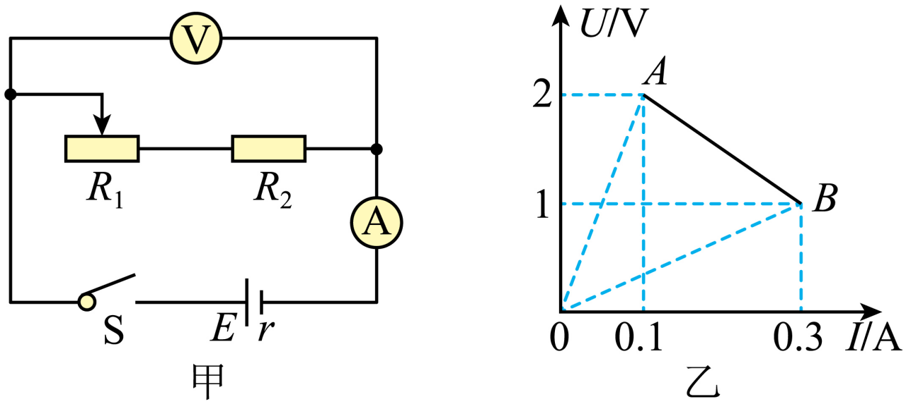
综合应用
电源与电阻的 U-I 图像综合应用
| 电源 U-I 图像 | 电阻 U-I 图像 | |
|---|---|---|
| 图形 | 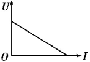 | 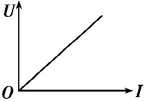 |
| U 、I 乘积 | 表示电源的输出功率 | 表示电阻消耗的功率 |
| U、I的比值 | 表示外电阻的大小，不同点对应的外电阻大小不同 | 每一点对应的比值均表示此电阻的阻值大小 |
| 斜率(绝对值) | 表示电源内阻r | 表示电阻大小(电阻为纯电阻时) |
表示电阻的工作点
例题
如图所示的图像中，直线①为某电源的路端电压与电流的关系图线，曲线②为某一电阻 R 的 U-I 图线，用该电源直接与电阻 R 连接成闭合电路。根据图像求：
- 此状态下 R 的阻值；
- 电源电动势为 E 和内阻r
- 电源的输出功率为 P_{出}
- 电源内部消耗功率为 P_{内}
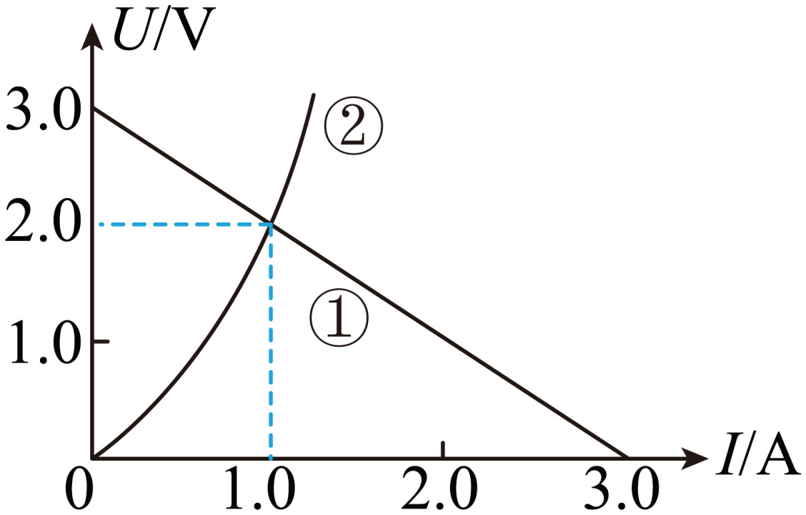
练习
已经测得该电池的电动势为 5\;V、内阻为 0.5\;\Omega，左图为某一小灯泡的 U-I 图线，现将两个这样的小灯泡并联后再与一个 4.5\;\Omega 的定值电阻 R 串联，接在该电源的两端，如图所示，求每个灯泡的功率。
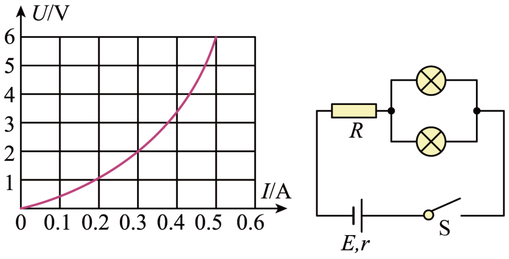
已知 E=5V、r=0.5\Omega、R=4.5\Omega，由闭合电路欧姆定律可得每个灯泡的电压与电流的关系式 U=E-2I(R+r)，代入数据整理得 U=5-10I
即单个灯泡电源的等效电动势为 5V，等效内阻 10\Omega。做出等效电源的外电路 U-I 图像，观察其与灯泡 U-I 图像的交点，得 P_{L}=U_{L}I_{L}=0.6W